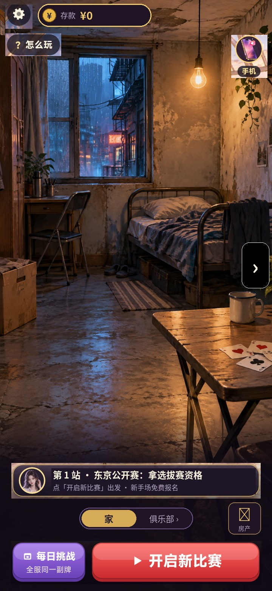
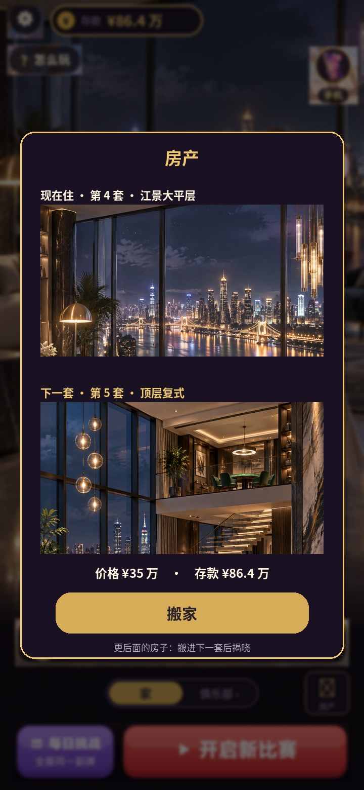
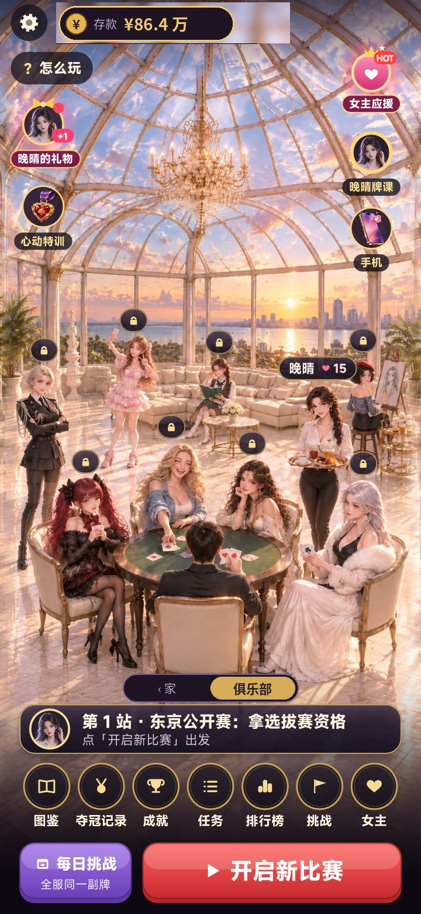
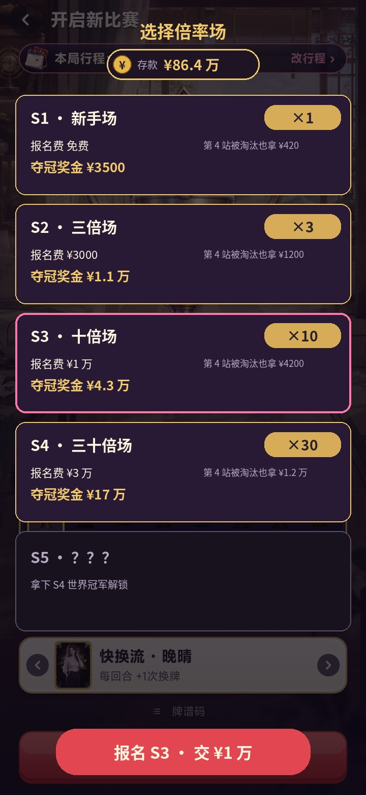
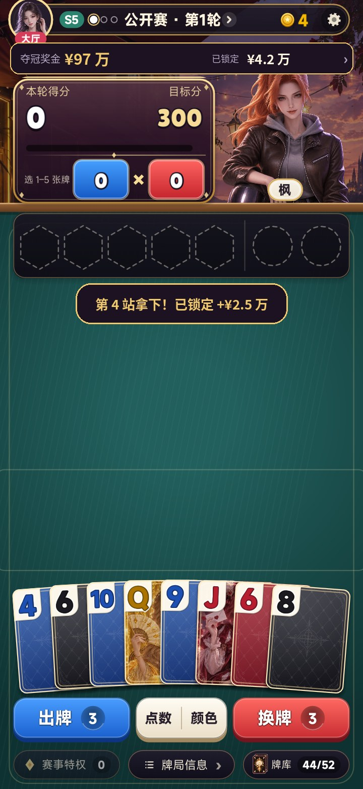
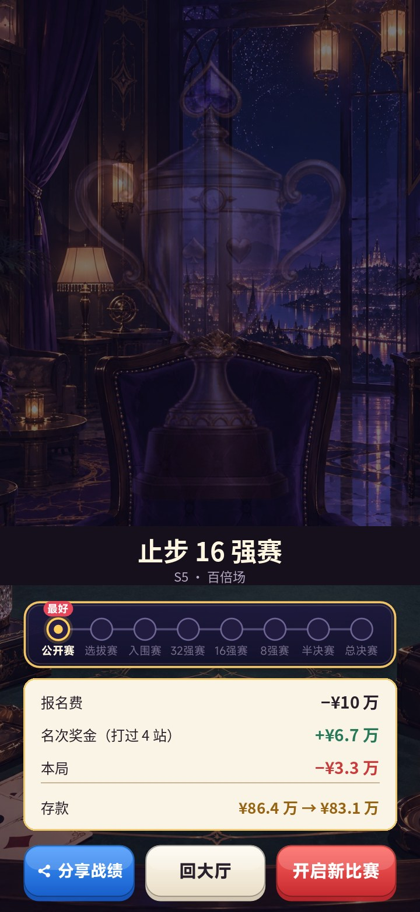
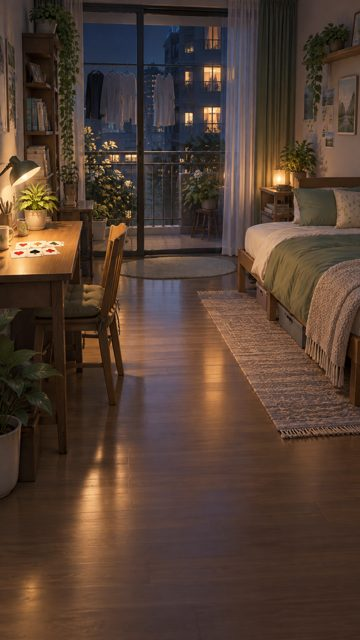

命运牌：身无分文到亿万身家 · 新版本详细方案
按你 11-21 的选择：家是首页、右滑去俱乐部；九套房，第九套要攒半个月；房子只给面子和恋爱；不分装修；只显示存款（不显示身家）；换房入口不放显眼位置；倍率场指数增长；不能中途退赛，被淘汰按打到的站给少量名次奖金；不加新广告位。所有金额都由程序按「每场每站的通过率 + 下面的设计目标」算出来，不是手填的。
一、这个版本玩起来是什么样
- 开局：雨夜被裁员、分手（开场 CG 不变）→ 回到城中村出租屋，存款 ¥0。
- 赚钱：开启新比赛 → 选倍率场（新手场免费，往上每两级奖金 ×10）→ 交报名费 → 打 8 站。夺冠拿大奖；中途被淘汰，按打过几站拿少量名次奖金。
- 花钱：报名费、开局请女主助阵、给女主买礼物、约会、告白戒指、换房子。
- 目标：从出租屋一路换到第九套「云端天空宫」；剧情照旧一季一位女主。
- 不卡人：新手场永远免费，存款不够时去低倍场攒钱。
二、界面效果和交互（新元素画在真实游戏截图 / 新房子美术上）






点图放大。效果图的数字取自下面的数值表（S3、S5 为例）。最终界面在游戏里实现后再截图给你确认。
1. 首页 · 家
- 全屏大图是江白现在住的房子（九张，见第四节）。左上：设置、怎么玩；顶部中间：存款（金色，进出钱时数字滚动，进钱有金色飘字和音效）；右上：手机。
- 底部从上到下：下一目标条（和现在大厅一样）、页签「家 / 俱乐部 ›」、每日挑战 + 开启新比赛。
- 房产：页签右边一个小按钮「⌂ 房产」，不抢眼；存款够买下一套时它上面亮一个小红点，此外不弹窗、不提醒。
- 恋人在家：你在她房间里设为 C 位的那位恋人（现有功能），会站在家的大图里；点她说一句家里专属的话。没有恋人时家里只有房子。
- 左右滑：手指左滑或点「俱乐部 ›」，整页平移到俱乐部；俱乐部右滑或点「‹ 家」回来。新号第一次回到家时，屏幕右边缘有一个「›」轻轻晃两下，提示能滑；滑过一次就不再出现。
- 点顶部存款 → 账本：最近 30 笔进出（报名费、名次奖金、夺冠奖金、礼物、约会、戒指、搬家），每笔写时间和金额。
2. 房产弹窗（点「⌂ 房产」）
- 上半：现在住的房子（图 + 名字）；下半：下一套的图、名字、价格。再往后的房子不显示，写「搬进下一套后揭晓」（工作室规定：后面的内容保持未知）。
- 存款够：金色按钮「搬家」→ 确认「花 ¥xx 搬进 xx？」→ 黑场 1 秒 + 字幕「搬家啦」+ 新房子大图淡入 + 存款数字往下滚；之后手机收到恋人的一条消息（「新家好大……我能常来吗？」，每套房每位恋人一句）。
- 存款不够：灰按钮「还差 ¥xx」。
- 搬到第 4 套时，前女友苏蔓发来一条消息（现有角色，「回头草」线的小彩蛋）。
3. 俱乐部（右页）
- 就是现在的大厅：九位女主、女主应援、晚晴的礼物、心动特训、图鉴 / 成就 / 任务 / 排行榜 / 挑战 / 女主。顶部的「晚晴俱乐部 已入住 x/9」换成存款，入住数挪到女主栏。
4. 开启新比赛 · 选倍率场
- 一张张倍率场卡片：「S3 · 十倍场 ×10」，写报名费、夺冠奖金、「第 4 站被淘汰也拿 ¥xx」。点卡片下方「名次奖金表 ›」展开 8 站各拿多少。
- 已解锁的全部显示，下一档只显示「S? · ？？？ 拿下上一档世界冠军解锁」，再往后不显示。
- 存款不够的卡片变灰，写「还差 ¥xx」；剧情季要求的场次（第 n 季在 S n 以上）用一个粉色小标「她在这里」标出。
- 选好后进「赛前准备」：两个空位「请女主助阵」（第五节），每个显示出场费；底部大按钮「报名 · 交 ¥xx」（报名费 + 出场费）。点了以后存款扣掉，有扣钱动画，然后进第 1 站。
5. 比赛中
- 顶栏下面一条奖金条：左「夺冠奖金 ¥xx」（金色大字），右「已锁定 ¥xx」（现在被淘汰能拿的名次奖金）。点它打开赛程弹窗，每站后面写上这一站的名次奖金。
- 每拿下一站（第 3 轮赢了）：屏幕中间金色提示「第 4 站拿下！已锁定 +¥xx」，奖金条的「已锁定」数字跳涨。
- 夺冠：全屏金色庆祝 + 夺冠奖金数字从 0 滚到最终值。
6. 一局结束 · 奖金单
- 原来的「牌库 / 最好的一手 / 牌谱码」卡片换成奖金单：报名费、助阵出场费、名次奖金或夺冠奖金、本局赚 / 亏、存款「旧 → 新」滚动。存款够买下一套房时，下面多一行小字「够搬家了 ›」。
7. 女主相关的花钱
- 礼物：她房间「送礼」页加一个「礼物店」：普通礼物、稀有礼物两档价格（第四节价格表），买了直接送。任务奖励从礼物改成存款；背包里已有的礼物照样能送。心意分上限仍是 100。
- 日常约会：她房间新增按钮「约她出去」：咖啡馆 / 西餐厅 / 天台夜景 / 私人游艇四档，越贵心意分和羁绊涨得越多，每档一段她的专属台词；每位每天一次（第二天 0 点刷新）。
- 恋人篇：赴约（约会①、约会②）时付约会费；告白局之前要先买告白戒指（买一次，失败了戒指还在）。剧情和触发条件不变。
- 价格都按「她那一季的场次」定：第 n 季的女主，花费按 S n 的收入算（见第四节表）。
三、数值是怎么算出来的
- 输入 1 · 通过率：每个倍率场、每一站「打过的比例」。现在用机器人模拟「典型剧情玩家」：4 次出牌、心动特训等级随场次升高（S n 约 7×(n−1) 级）、一半人每赛段用一次「再来一手」视频。真实玩家数据 11-21 刚开始入库，攒满 3 天后用同一个程序重算一遍，表格结构不变，数字会变。
- 输入 2 · 设计目标（可以改，改了金额自动重算）：倍率每两级 ×10；每场亏钱的概率目标 S1 15% → S8 60%；每场平均回本率 S1 +100% → S8 +12%（越高级越难赚，但打得好仍然赚）；每人每天约 13 局（TapDB：11-14～11-20 共 5244 局 / 7 天 / 日活 58）。
- 名次奖金：打过 k 站后被淘汰拿「报名费 × c × 形状[k]」。程序找出「打过第几站以后被淘汰才能回本」，让这之前被淘汰的人的比例 = 亏钱目标，从而唯一定出 c。
- 夺冠奖金：在名次奖金定好之后，选夺冠奖金让「平均拿回的钱 / 报名费 − 1」= 回本率目标，也是唯一的。
- 房价 = 天数 × 每天局数 × 「当时能去的场里平均一局最多能净赚多少」；第九套是 15 天，也就是你说的「肝半个月」。
- 礼物 / 约会 / 戒指 = 几局的平均净赚（普通礼物 1 局、咖啡馆 1 局、西餐厅 3 局、天台 6 局、游艇 15 局、约会① 5 局、约会② 8 局、戒指 25 局），按她那一季的场次算。
- 所有金额取两位有效数字（例如 ¥8.6 万、¥1.2 亿），好记。
- 程序：
devtools/money/economy.py（数值）、mock.py（效果图）、spec.py（这页）。
四、数值表
1. 倍率场总表
| 场次 | 倍率 | 报名费 | 夺冠奖金 | 夺冠率 | 亏钱的概率 不看视频 / 看视频 | 平均回本率 不看视频 / 看视频 | 平均一局净赚 |
|---|---|---|---|---|---|---|---|
| S1 新手场 | ×1 | 免费 | ¥3500 | 39% | 0% / 0% | +66% / +130% | ¥1984 |
| S2 三倍场 | ×3 | ¥3000 | ¥1.1 万 | 29% | 38% / 25% | +46% / +110% | ¥2341 |
| S3 十倍场 | ×10 | ¥1 万 | ¥4.3 万 | 19% | 50% / 31% | +24% / +97% | ¥6074 |
| S4 三十倍场 | ×30 | ¥3 万 | ¥17 万 | 11% | 63% / 39% | +3% / +85% | ¥1.3 万 |
| S5 百倍场 | ×100 | ¥10 万 | ¥97 万 | 6% | 74% / 47% | -13% / +82% | ¥3.5 万 |
| S6 三百倍场 | ×300 | ¥30 万 | ¥600 万 | 2% | 84% / 57% | -27% / +76% | ¥7.4 万 |
| S7 千倍场 | ×1000 | ¥100 万 | ¥4000 万 | 1% | 91% / 68% | -38% / +45% | ¥3.7 万 |
| S8 三千倍场 | ×3000 | ¥300 万 | ¥1.2 亿 | 0% | 95% / 81% | -48% / -17% | ¥-978397 |
S9（×10000）等出 S9 时按同一个程序补。S1 免费，奖金按 ¥1000 的「虚拟报名费」算。
要特别说明的一点：机器人在 S5 以上明显比真人弱（S6～S8 几乎不夺冠，有剧情进度的真人是能在 S8 夺冠的），所以 S5～S8 这几行的亏钱概率偏高、回本率偏低（S8 算出来 88% 亏、平均 −33%，目标是 60% 亏）。夺冠奖金封顶报名费 ×40，否则会算出几百倍。S1～S4 和真人差距小，可以作为参考。3 天后用真实玩家的通过率重算，这几行会回到目标附近；规则、公式、表格结构都不变。
2. 名次奖金（打过 k 站后被淘汰拿多少）
| 场次 | 0 站 | 1 站 | 2 站 | 3 站 | 4 站 | 5 站 | 6 站 | 7 站 | 夺冠 |
|---|---|---|---|---|---|---|---|---|---|
| S1 | ¥0 | ¥100 | ¥230 | ¥420 | ¥670 | ¥1000 | ¥1400 | ¥1900 | ¥3500 |
| S2 | ¥0 | ¥300 | ¥700 | ¥1200 | ¥2000 | ¥3000 | ¥4200 | ¥5800 | ¥1.1 万 |
| S3 | ¥0 | ¥1000 | ¥2300 | ¥4200 | ¥6700 | ¥1 万 | ¥1.4 万 | ¥1.9 万 | ¥4.3 万 |
| S4 | ¥0 | ¥3000 | ¥7000 | ¥1.2 万 | ¥2 万 | ¥3 万 | ¥4.2 万 | ¥5.7 万 | ¥17 万 |
| S5 | ¥0 | ¥1 万 | ¥2.3 万 | ¥4.2 万 | ¥6.7 万 | ¥10 万 | ¥14 万 | ¥19 万 | ¥97 万 |
| S6 | ¥0 | ¥3 万 | ¥7 万 | ¥12 万 | ¥20 万 | ¥30 万 | ¥42 万 | ¥58 万 | ¥600 万 |
| S7 | ¥0 | ¥10 万 | ¥23 万 | ¥42 万 | ¥67 万 | ¥100 万 | ¥140 万 | ¥190 万 | ¥4000 万 |
| S8 | ¥0 | ¥30 万 | ¥70 万 | ¥120 万 | ¥200 万 | ¥300 万 | ¥420 万 | ¥580 万 | ¥1.2 亿 |
3. 算这些数用的通过率（打过第 k 站的比例，机器人，两种玩家平均）
| 场次 | 1 | 2 | 3 | 4 | 5 | 6 | 7 | 8 = 夺冠 | 局数（不看 / 看） |
|---|---|---|---|---|---|---|---|---|---|
| S1 | 99% | 98% | 97% | 95% | 76% | 60% | 45% | 39% | 50 / 50 |
| S2 | 100% | 98% | 97% | 95% | 69% | 51% | 37% | 29% | 30 / 30 |
| S3 | 100% | 98% | 97% | 93% | 59% | 42% | 29% | 19% | 30 / 30 |
| S4 | 100% | 98% | 96% | 90% | 49% | 32% | 22% | 11% | 30 / 30 |
| S5 | 100% | 98% | 94% | 86% | 39% | 23% | 15% | 6% | 30 / 30 |
| S6 | 100% | 97% | 92% | 80% | 30% | 16% | 9% | 2% | 30 / 30 |
| S7 | 100% | 97% | 90% | 71% | 21% | 9% | 5% | 1% | 30 / 30 |
| S8 | 100% | 96% | 87% | 54% | 12% | 5% | 2% | 0% | 30 / 30 |
4. 九套房
| 图 | 房子 | 价格 | 大约要攒 |
|---|---|---|---|
| 第 1 套 · 城中村出租屋 | 开局就有 | ||
 | 第 2 套 · 老小区一居室 | ¥1.3 万 | 约 0.5 天 · 在 S1 及以下最赚的场打 |
| 第 3 套 · 市中心公寓 | ¥3 万 | 约 1 天 · 在 S2 及以下最赚的场打 | |
| 第 4 套 · 江景大平层 | ¥12 万 | 约 1.5 天 · 在 S3 及以下最赚的场打 | |
| 第 5 套 · 顶层复式 | ¥35 万 | 约 2 天 · 在 S4 及以下最赚的场打 | |
| 第 6 套 · 山顶别墅 | ¥140 万 | 约 3 天 · 在 S5 及以下最赚的场打 | |
| 第 7 套 · 海边庄园 | ¥380 万 | 约 4 天 · 在 S6 及以下最赚的场打 | |
| 第 8 套 · 私人海岛 | ¥580 万 | 约 6 天 · 在 S7 及以下最赚的场打 | |
| 第 9 套 · 云端天空宫 | ¥1400 万 | 约 15 天 · 在 S8 及以下最赚的场打 |
5. 礼物 / 约会 / 告白（按女主那一季的场次）
| 第 1 季 | 第 2 季 | 第 3 季 | 第 4 季 | 第 5 季 | 第 6 季 | 第 7 季 | 第 8 季 | |
|---|---|---|---|---|---|---|---|---|
| 普通礼物 | ¥2000 | ¥2300 | ¥6100 | ¥1.3 万 | ¥3.5 万 | ¥7.4 万 | ¥3.7 万 | ¥1 |
| 稀有礼物 | ¥9900 | ¥1.2 万 | ¥3 万 | ¥6.6 万 | ¥17 万 | ¥37 万 | ¥19 万 | ¥5 |
| 日常约会 · 咖啡馆 | ¥2000 | ¥2300 | ¥6100 | ¥1.3 万 | ¥3.5 万 | ¥7.4 万 | ¥3.7 万 | ¥1 |
| 日常约会 · 西餐厅 | ¥6000 | ¥7000 | ¥1.8 万 | ¥4 万 | ¥10 万 | ¥22 万 | ¥11 万 | ¥3 |
| 日常约会 · 天台夜景 | ¥1.2 万 | ¥1.4 万 | ¥3.6 万 | ¥8 万 | ¥21 万 | ¥44 万 | ¥22 万 | ¥6 |
| 日常约会 · 私人游艇 | ¥3 万 | ¥3.5 万 | ¥9.1 万 | ¥20 万 | ¥52 万 | ¥110 万 | ¥56 万 | ¥15 |
| 恋人篇 · 约会① | ¥9900 | ¥1.2 万 | ¥3 万 | ¥6.6 万 | ¥17 万 | ¥37 万 | ¥19 万 | ¥5 |
| 恋人篇 · 约会② | ¥1.6 万 | ¥1.9 万 | ¥4.9 万 | ¥11 万 | ¥28 万 | ¥59 万 | ¥30 万 | ¥8 |
| 告白戒指 | ¥5 万 | ¥5.9 万 | ¥15 万 | ¥33 万 | ¥87 万 | ¥190 万 | ¥93 万 | ¥25 |
第 1 季是晚晴（S1），第 n 季在 S n。第 9 季同 S8。
五、开局请女主助阵
- 报名后、开打前，从已认识的女主里最多请 2 位，付出场费，这一局有效，打完就没了。请她助阵 +1 羁绊点。
- 出场费 = 这个能力平均让你多赚的钱 × 60%（会用的人划算，乱用的人亏）。
- 赚钱类（能直接算，已出数）：
| 出场费 | S1 | S2 | S3 | S4 | S5 | S6 | S7 | S8 |
|---|---|---|---|---|---|---|---|---|
| 莱拉 · 赞助（本局所有奖金 +30%） | ¥360 | ¥960 | ¥2900 | ¥7800 | ¥2.4 万 | ¥6.7 万 | ¥19 万 | ¥36 万 |
| 晚晴 · 保底（被淘汰退还一半报名费） | ¥0 | ¥640 | ¥2400 | ¥8000 | ¥2.8 万 | ¥8.8 万 | ¥30 万 | ¥90 万 |
- 改打法类 7 个（夏洛特·推理、英格丽德·整队、卡米耶·改色、薇拉·回收、麦迪逊·连击、智雅·复刻、绫香·女王令）：要先做进游戏，再让机器人在每个倍率场「带 / 不带」各打一批，量出它把每站通过率提高了多少，代进同一个程序算出「平均多赚多少」，出场费收 60%。没量之前不给数，不拍脑袋。做法和时间见第七节；太强的（比如带上以后 S8 也稳赚）削弱效果而不是只加价。
六、老玩家、存档、埋点、审核
- 老玩家：更新后第一次进游戏，按存档里每一场打到过的最远一站，补发「历年奖金」（按名次奖金表的 50%）；已经走完的约会、告白不收钱；背包礼物保留。房子从出租屋开始，存款够就能直接搬。
- 存档：存款跟着云存档走；排行榜加「存款榜」。
- 埋点（上线前在 TapDB 登记）：报名（场次、报名费、助阵）、一局结束（名次奖金 / 夺冠奖金、净赚）、搬家（第几套、存款）、买礼物、约会（档位）、买戒指。上线后用真实数据核对「各场亏钱概率」是否接近目标，每周重算一次。
- 审核用语：只用报名费、奖金、名次奖金、存款；不出现押注、下注、筹码、赌；画面不放钞票、金币堆（房子美术已按这个出）。
七、工作安排（一次做完）
- 第 1～2 天：存款、账本、报名改倍率场、奖金条、奖金单、名次奖金结算、老玩家补发。
- 第 2～3 天：家页面、左右滑、房产弹窗、搬家演出、九张房子美术入库、恋人在家。
- 第 3～4 天：九个助阵能力进引擎 + 机器人会用它们；每个能力在每个倍率场「带 / 不带」各跑一批，算出 7 个打法类的出场费。
- 第 4 天：用 3 天真实数据重算全部数值，发你最终数值表确认。
- 第 5～6 天：礼物店、日常约会（9 位 × 4 档新台词）、恋人篇收费、告白戒指；整体模拟（不看视频也能推进、存款不会多到花不完）；截图给你确认后提审。